UiPath Studio: a robotkörnyezet üzembe helyezése
Community-fiókot regisztrálsz, ellenőrzöd a csomagot, telepíted a Studio-t, és lefuttatod az első próbarobotodat.
- van UiPath Automation Cloud fiókod, és ellenőrizted, hogy ingyenes Community csomagon fut;
- letöltötted és telepítetted a UiPath Studio-t, és be is jelentkeztél vele;
- lefuttattad az első próbarobotodat: a gép kiírta, hogy fut.
Mi ez, és mire készülünk vele?
A UiPath a robotizált folyamatautomatizálás (RPA) egyik elterjedt eszköze. Szoftverrobotokat építünk vele: a robot például Excelt nyit, adatot olvas, gépel, kattint vagy fájlokat rendez. A negyedik, hetedik és nyolcadik napon ezekből készítünk működő példákat. Ebben a fejezetben előkészíted a Windowsos asztali Studio-t, majd egy rövid próbával ellenőrzöd a telepítést. A képek egy 2026. szeptemberi telepítést mutatnak.
A regisztrációs oldal fizetős csomagok próbaverzióját is felajánlhatja, például Start an Automation Cloud Standard Trial néven. A kurzushoz a Community csomagot használjuk, ezért a lenti útvonalat kövesd. Egy fizetős próbacsomag jogosultságai a próbaidő végén megváltozhatnak; ne erre építsd a féléves munkát.
1. rész: fiók és Community csomag
- Nyisd meg a UiPath Community regisztrációs oldalát. Ha megjelenik a sütibeállítás, a View cookie settings lehetőségnél állíthatod be a választásodat. A bezáró X önmagában nem igazolja, hogy elutasítottad a nem szükséges sütiket.
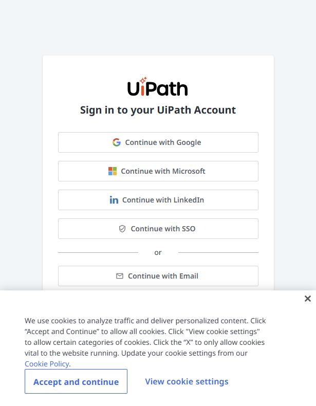
A cloud.uipath.com belépő oldala a süti-sávval 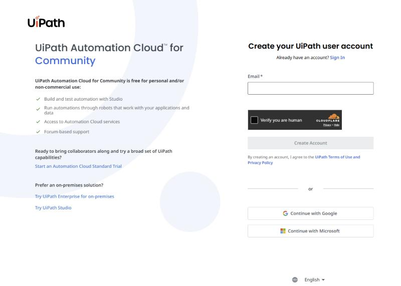
A regisztrációs oldal. Balra a Community-csomag leírása; a bal alsó Standard Trial linket nem használjuk. - Regisztrálj lehetőleg az egyetemi címeddel. Ha ehhez Google-bejelentkezés tartozik, válaszd a Continue with Google gombot és a megfelelő fiókot. Más esetben használd a támogatott Microsoft- vagy e-mailes utat. Az e-mailes út a Create Account gombbal és e-mail-megerősítéssel folytatódik. Ha emberi ellenőrzést kér a rendszer, végezd el a saját böngésződben.
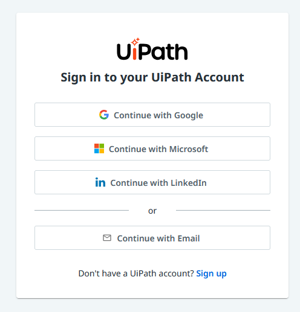
Belépési lehetőségek: Continue with Google, Microsoft, LinkedIn vagy Email - Első belépéskor két rövid kérdés jön. A Tell us a bit about yourself képernyőn a neved és az ország (Romania) kell; a hírlevél-pipát hagyd üresen, majd Next.
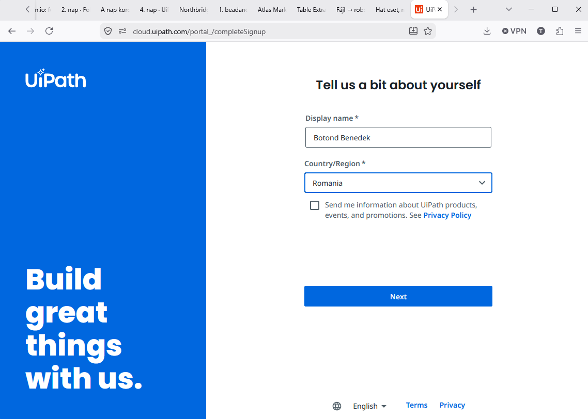
Tell us a bit about yourself: Display name és Country/Region mezők - A Create your cloud organization képernyőn adj nevet a saját felhős munkaterületednek: a saját neved + automatizalas jó választás (például kovacsanna automatizalas), majd Create Organization.
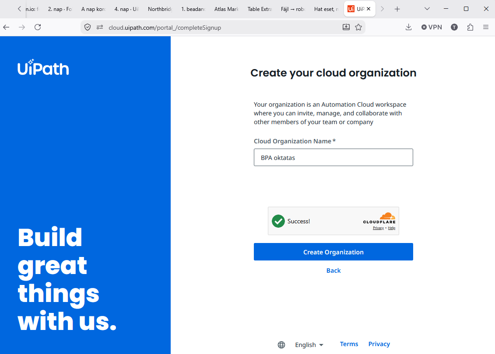
Create your cloud organization: a szervezetnév mezője - Megérkeztél az Automation Cloud kezdőoldalára (Good morning + a neved). Ez a robotjaid felhős vezérlőpultja; itt két dolgot használunk belőle: a licenc-ellenőrzést és a letöltést.
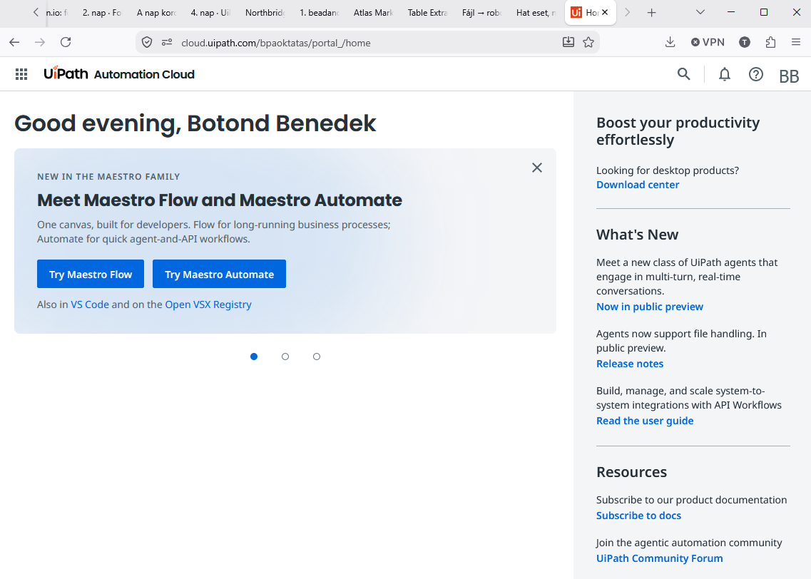
Az Automation Cloud kezdőoldala belépés után - Ellenőrizd a csomagodat: kattints a bal felső kilencpontos rács ikonra, majd a menüben az Admin pontra. A Licenses kártyán ezt kell látnod: Community Plan.
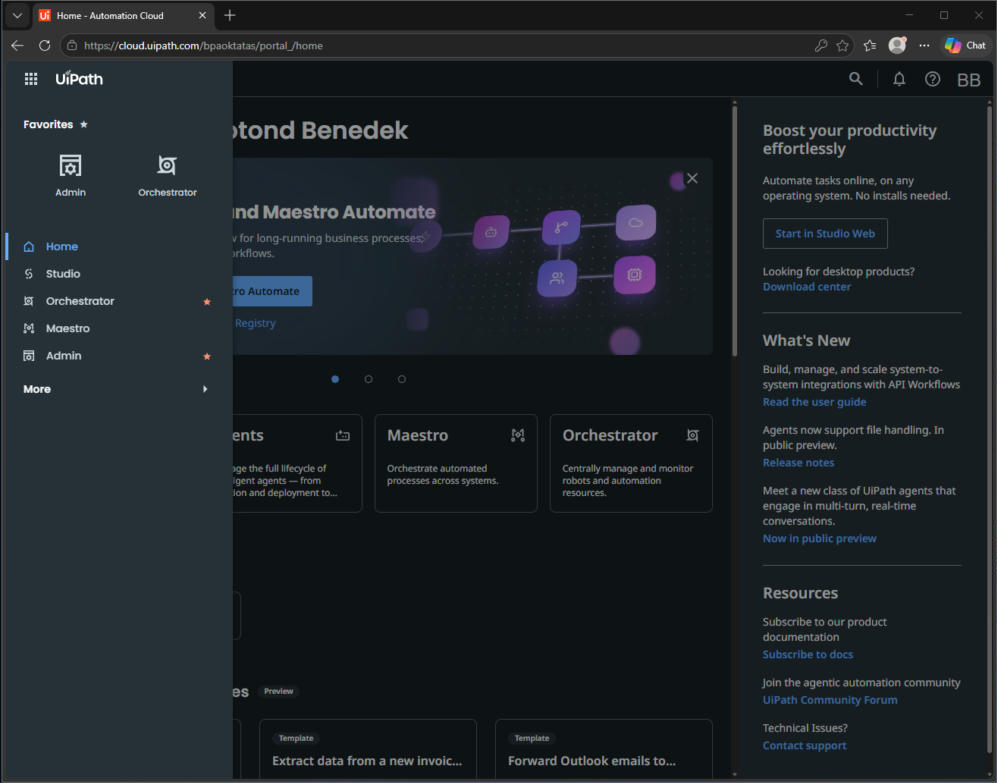
A kilencpontos rács menüje: Home, Studio, Orchestrator, Admin 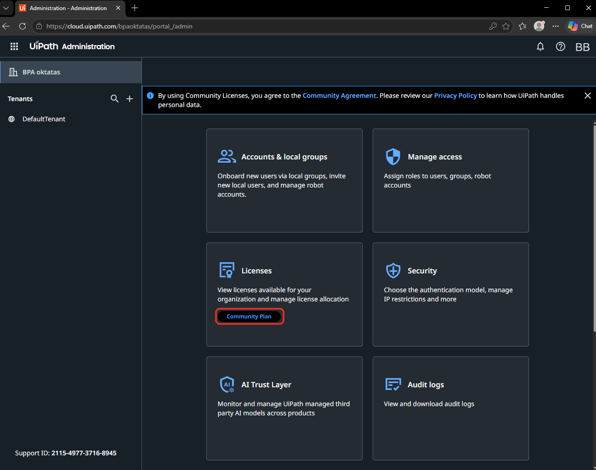
A képen Community Plan szerepel. Ha nálad más csomag látszik, ellenőrizd a jogosultságokat, és kérj segítséget az oktatótól, mielőtt fizetős próbát aktiválnál. - A Licenses kártyára kattintva ellenőrizheted a fejlesztői jogosultságodat. A képen 1 Pro felhasználói licenc látható, Studio- és Attended Robot-hozzáféréssel. A saját fiókodban a csomag nevét, a Studio-hozzáférést és az esetleges lejárati jelzést is ellenőrizd. A képernyőképen szereplő dátum csak az ott bemutatott fiókra vonatkozik.
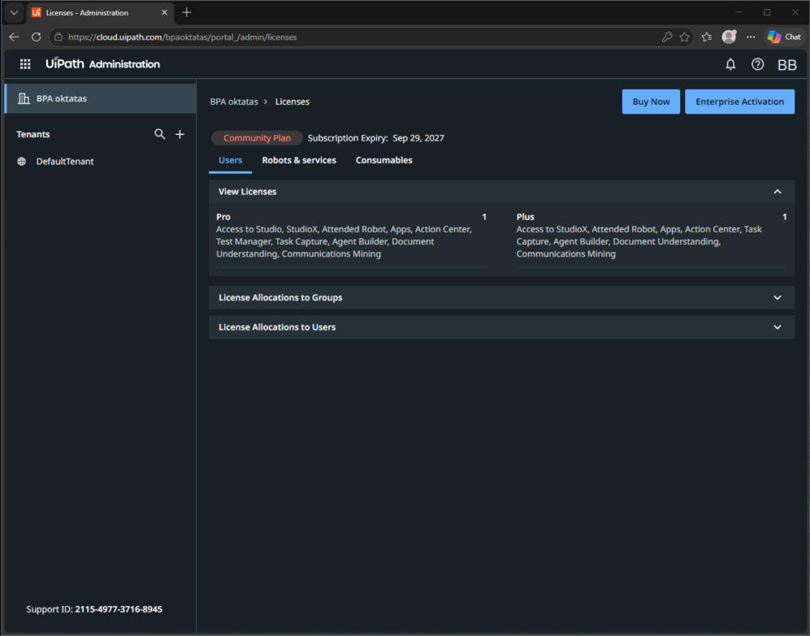
A Licenses oldal: Community Plan, 1 Pro felhasználói licenc
2. rész: a Studio letöltése és telepítése
- A rács menüből menj vissza a Home oldalra, és a jobb oldali oszlopban keresd: Looking for desktop products? alatta Download center. A letöltőoldalon a bal oldali Community Edition kártya kék Download gombja kell.
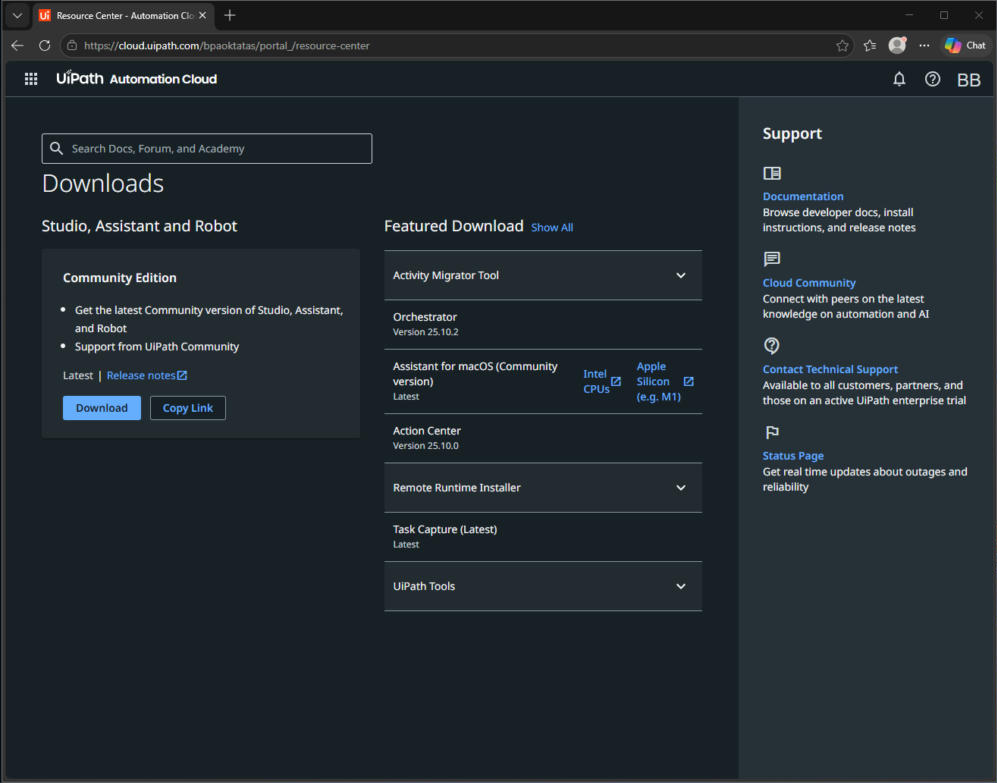
A Community Edition kártya: Studio, Assistant és Robot egyben. Itt sincs trial. - A képen a letöltött telepítő neve UiPathPlatform.msi; a szolgáltatás verziójától függően a fájlnév és a méret eltérhet. Indítsd el a frissen letöltött Studio-telepítőt a Letöltések mappából. Ha a Windows engedélyt kér, ellenőrizd a UiPath kiadót, és válaszd az Igen lehetőséget.
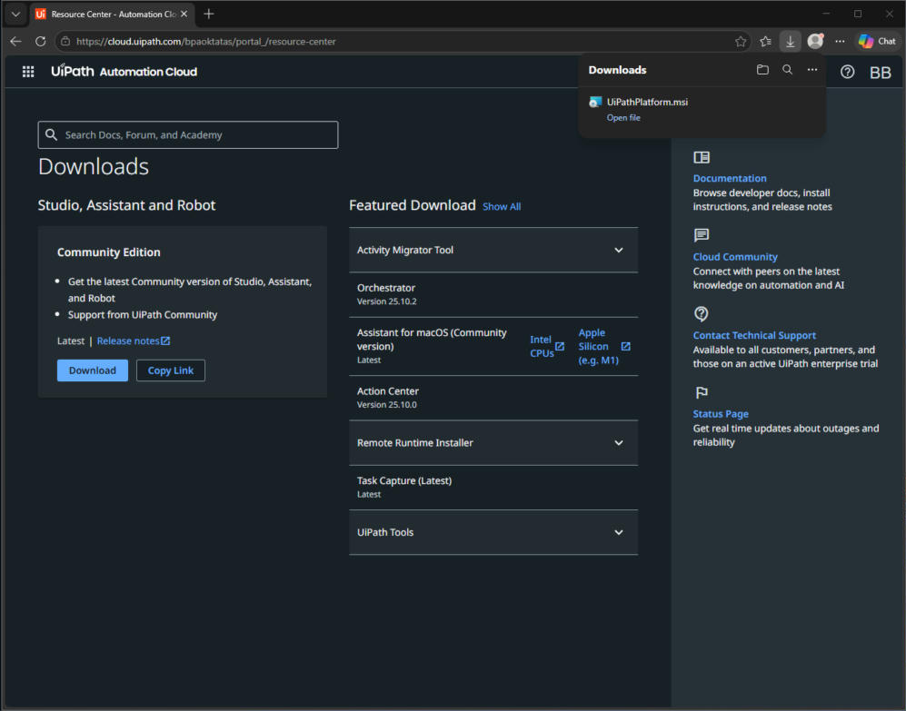
A kész letöltés az Edge letöltési buborékjában: UiPathPlatform.msi - A telepítő What do you want to do? képernyőjén jelöld ki a Studio összetevőt. A Robot automatikusan kijelölődhet, mivel a folyamatok futtatásához szükséges. Az Assistant és az Extensions külön telepítése most nem szükséges; a böngésző-bővítményt a webes robot előtt telepítjük. Fogadd el a License Agreement feltételeit, majd kattints az Install gombra.
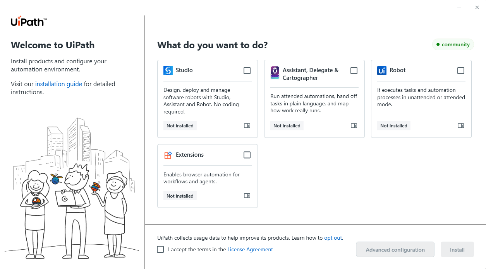
A telepítő komponens-választó képernyője, jobb felül a zöld community jelvénnyel 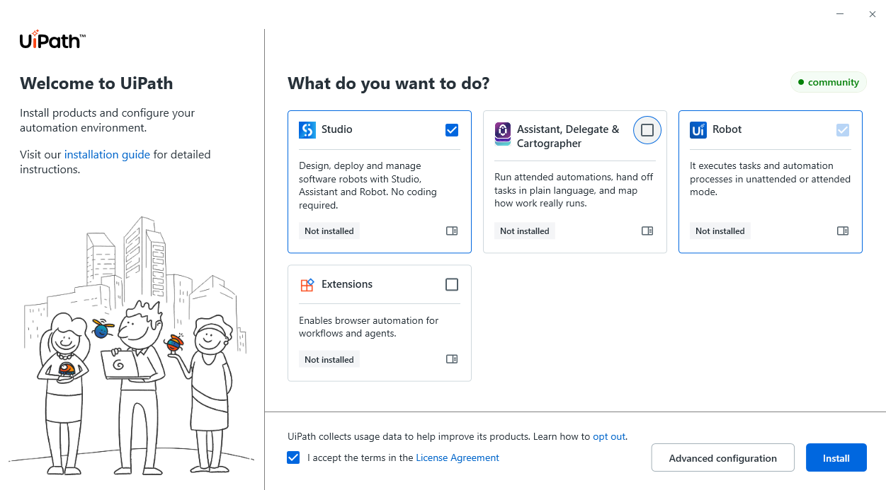
A kiválasztott állapot: Studio pipálva, Robot automatikusan jelölve, License Agreement elfogadva - A telepítő letölti a szükséges összetevőket. Várd meg, amíg a folyamat befejeződik.
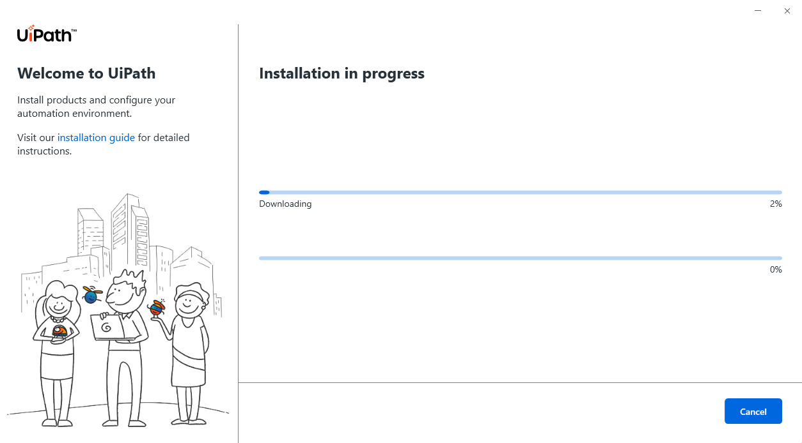
Installation in progress: letöltési folyamatjelzők - A telepítés végén indítsd el a UiPath Studio-t (új ikon az asztalon). Az első képernyő bejelentkezést kér: a Service URL maradjon
https://cloud.uipath.com, kattints a Sign in gombra, és a megnyíló böngészőablakban lépj be ugyanazzal a fiókkal, amivel az 1. részben regisztráltál.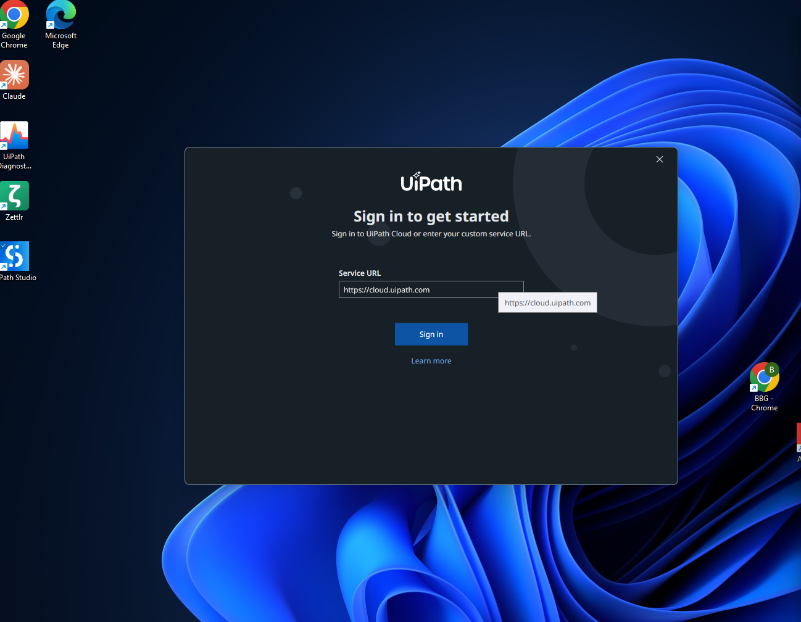
A Studio első képernyője: Sign in to get started, Service URL: cloud.uipath.com - Sikeres belépés után a Studio kezdőképernyője fogad. Ellenőrizd a bal alsó sarkot: Community License és Pro feliratot kell látnod a verziószám alatt.
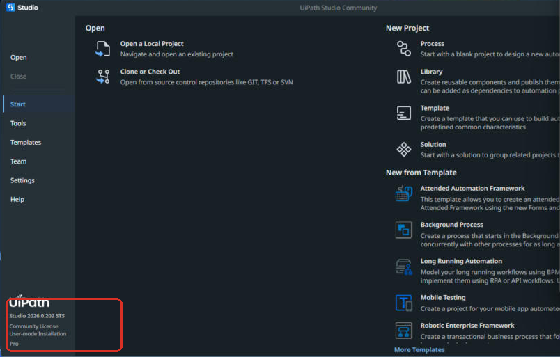
A bal alsó sarok az igazolás: Community License, Pro. Ha Trial-t látsz, szólj az oktatónak.
3. rész: az első próbarobotod
- A kezdőképernyőn a New Project oszlopban kattints a Process lehetőségre. A névnek írd: Proba (ékezet és szóköz nélkül), a leírás maradhat üresen, majd Create. Az első projekt megnyitásakor a Studio letöltheti a szükséges csomagokat; várd meg, amíg a tervező használhatóvá válik.
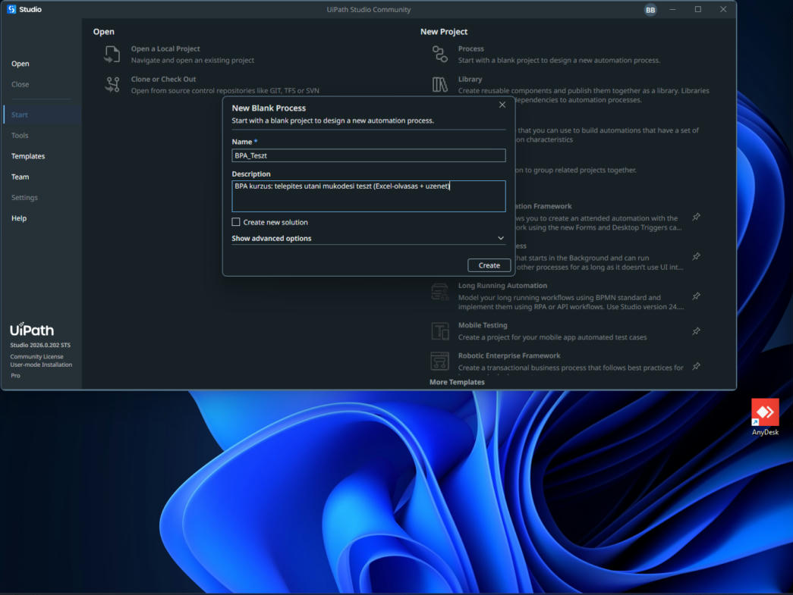
A New Blank Process párbeszéd: Name és Description mezők, Create gomb - Megnyílt a tervező: balra a projektfájlok, középen a Main munkaterület (Drop activity here), jobbra a tulajdonságok panel.
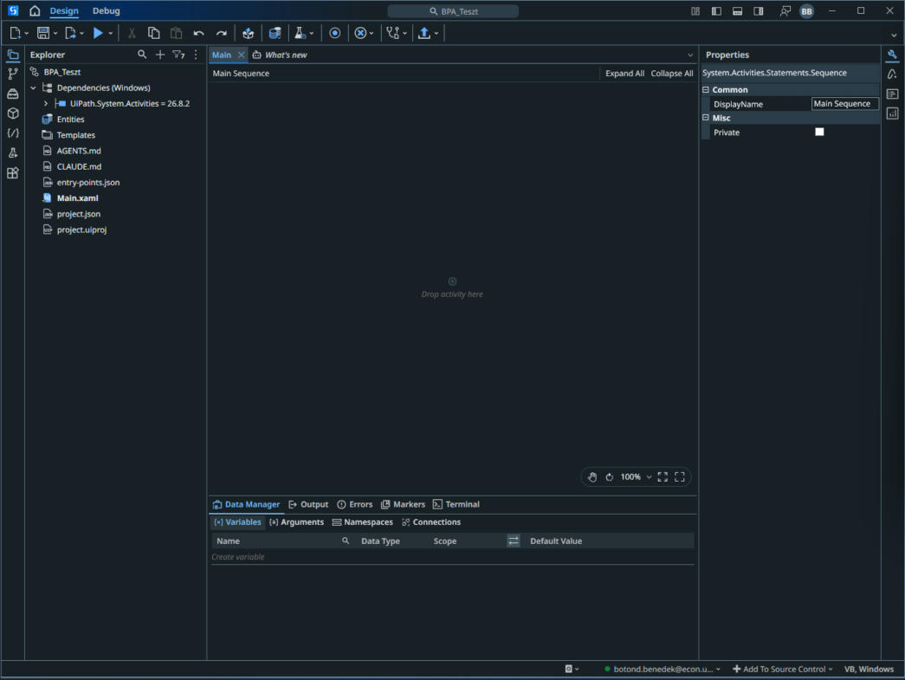
A Studio tervezője: projektfa, üres Main Sequence vászon, Properties panel - A középső munkaterületen kattints a Drop activity here feliratra vagy a hozzáadásra szolgáló + gombra. Az aktivitáskeresőben írd be:
Message Box, és válaszd ezt az aktivitást. Másik út: a bal oldali Activities panel keresőjében keresd meg, majd húzd a Main munkaterületre. Egyes Studio-verziókban a Ctrl+Shift+T billentyűparancs is megnyitja a keresőt. - A kártyán a Text mezőbe kattints, és írd be idézőjelekkel együtt:
"Fut az első robotom!", majd nyomj Tab-ot. - A felső szalagon válaszd a Run műveletet, vagy nyomd meg a Ctrl+F5 billentyűket. A Debug File, illetve az F5 hibakeresési módban indítja a robotot. Az első futtatás előtt a Studio előkészíti a projektet. Ezután megjelenik az üzenetablak. Az OK gombbal zárd be; a futtatás befejeződik.
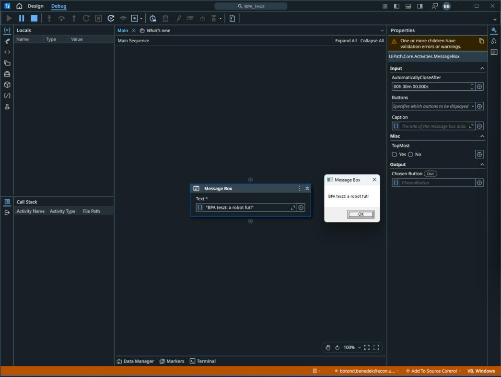
Ezt kellett látnod: a Studio lefordította a projektet, majd lefuttatta az első robotodat.
A Studio bal alsó sarkában Community License és Pro felirat áll, és az üzenetablakos mini robotod lefutott.
Ha a próba nem sikerül: a Text mezőbe idézőjelek közé írt szöveg kerüljön. Ha nem találod az aktivitást, ellenőrizd, hogy Process projektet nyitottál. Telepítési vagy bejelentkezési hibánál jegyezd fel a hibaüzenetet, és jelezd az oktatónak a robotépítő nap előtt.
Mit tud az ingyenes (Community) csomag?
| Kérdés | Válasz |
|---|---|
| Meddig használható? | Nem jár le: a licenc évente magától megújul; egyéni tanulásra, kis szervezeteknek szól. |
| Mi van benne? | UiPath Studio (1 Pro fejlesztői licenc), saját gépen futó (attended) robot, felhős kezelőfelület. |
| Gépigény | Windows 10/11, x64 architektúra; legalább 8 GB rendelkezésre álló memória, ajánlott 12 GB. A telepítéshez és a projektekhez több GB szabad tárhely szükséges. |
Otthonra: nézd meg, mi vár ránk
 YouTube · Lejátszási listaUiPath Beginners CourseA teljes sorozat megnyitása új lapon →
YouTube · Lejátszási listaUiPath Beginners CourseA teljes sorozat megnyitása új lapon →
A telepítés ráér a negyedik napig, de érdemes még ma elvégezni: ha bármi elakad, van időnk megoldani, és az órán rögtön építéssel kezdhetsz.
- Az RPA tipikus terepe minden olyan munka, ahol két rendszer között kézzel másolsz adatot.
- A hetedik napon számlákat dolgozunk fel robottal, a nyolcadik napon pedig a robot API-t hív meg, és az eredményt a CRM-be írja.
- UiPath Academy: ingyenes, regisztrációhoz kötött videós kurzusok: academy.uipath.com: kezdésnek az Automation Explorer tanulási út első moduljai.
- UiPath Studio hivatalos dokumentáció: docs.uipath.com/studio: ha egy aktivitásról többet akarsz tudni, itt keresd.